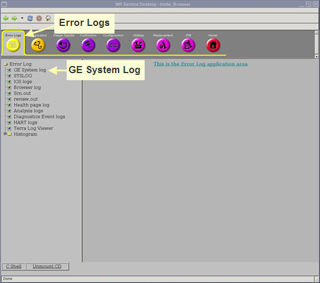
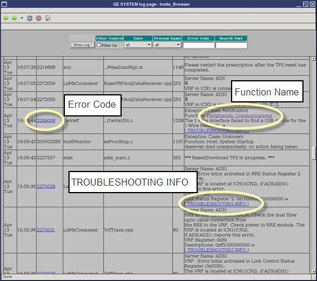
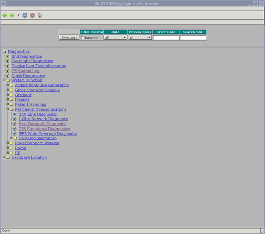
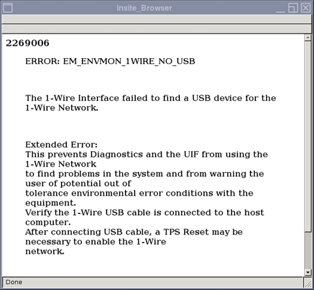

GE Exclusive Use Only
Direction 5500113, Rev# 3
Discovery MR750 3.0T Service Methods
Module Version 2.0, Version Date 6/14/10
GE Exclusive Use Only |
The Proprietary Error Log Viewer is used to provide an easy and efficient way for the field engineer, using either a Proprietary or Advanced Service Key to view the GE System Error Log. This advanced Error Log Viewer contains hyperlinks to extended error messages as well as the Diagnostic folder to run diagnostics associated with the error message.
Text hyperlinks in the GE System Log provide an easy and efficient way for the field engineer to access:
The Diagnostics folder associated with the specific error's function name.
The Error Code information window associated with the error.
To open the GE System Log from the MR Service Desktop select Error Logs > Error Log > GE System log.
Illustration 1: MR Service Desktop

Linked text in the GE System Log appears underlined and is either blue or purple. Unvisited links are blue, visited links are purple. Three types of links appear in the log. These links can only be accessed in proprietary mode using a service key.
Function Name
[TROUBLESHOOTING INFO]
Numeric Error Code
Illustration 2: GE System Log

Clicking a Function Name link in the Message column opens the error's associated Diagnostics folder in the GE System Log. From here you can run the diagnostics.
Illustration 3: Diagnostics Window

Clicking the [TROUBLESHOOTING INFO] link in the Message column takes you to the extended error message window.
Clicking the numeric link in the Error Code column takes you to the extended error message window.
Illustration 4: Extended Error Message Window
